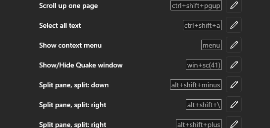

Hot Keys
Configures the keys used to open and close an app.
Hot keys are supported on a global basis, and per app. Multiple hot keys are supported, with an optional modifier.
Global
{
"HotKeys": [
// Tilde, without modifiers
{ "Key": "OemTilde" },
// Ctrl + Q
{ "Modifiers": "Control", "Key": "Q" },
// Multiple modifiers
{ "Modifiers": "Control,Shift", "Key": "W" }
]
}Per App
{
"Apps": [
{
"Name": "Terminal",
"HotKeys": [
// Ctrl + 1
{ "Modifiers": "Control", "Key": "1" }
]
},
{
"Name": "File Browser",
"HotKeys": [
// Ctrl + 2
{ "Modifiers": "Control", "Key": "2" }
]
}
]
}Windows Key + Tilde as a Hot Key
When using the Windows key + tilde as a hot key, while toggling Windows Terminal, the default shortcut for Windows Terminal's own Quake mode may interfere.
You can turn off the built-in Quake mode, by unmapping the key:

F12 as a Hot Key
When using "F12" as a hotkey, it may be necessary to disable the key as a shortcut for the system-wide debugger first.
Since F12 is the default for the debugger, it won't respond when used in another app, such as Windows Terminal Quake, or ConEmu.
This can be done by changing the registry key at:
Computer\HKEY_LOCAL_MACHINE\SOFTWARE\Microsoft\Windows NT\CurrentVersion\AeDebug\UserDebuggerHotKeyThis key defaults to 0, which means F12.
As pointed out by the ConEmu docs, it can for example be changed to the "Pause"-key (value 13).
A reboot may also be required, after which F12 can be used as a hotkey for toggling.
Thanks to Luca for pointing this out on GitHub.
See also:
Key Modifiers
- Alt
- Control
- Shift
- Super
Keys
// The bitmask to extract a key code from a key value.
KeyCode
// The bitmask to extract modifiers from a key value.
Modifiers
// No key pressed.
None
// The left mouse button.
LButton
// The right mouse button.
RButton
// The CANCEL key.
Cancel
// The middle mouse button (three-button mouse).
MButton
// The first x mouse button (five-button mouse).
XButton1
// The second x mouse button (five-button mouse).
XButton2
// The BACKSPACE key.
Back
// The TAB key.
Tab
// The LINEFEED key.
LineFeed
// The CLEAR key.
Clear
// The RETURN key.
Return
// The ENTER key.
Enter
// The SHIFT key.
ShiftKey
// The CTRL key.
ControlKey
// The ALT key.
Menu
// The PAUSE key.
Pause
// The CAPS LOCK key.
Capital
// The CAPS LOCK key.
CapsLock
// The IME Kana mode key.
KanaMode
// The IME Hanguel mode key. (maintained for compatibility; use HangulMode).
HanguelMode
// The IME Hangul mode key.
HangulMode
// The IME Junja mode key.
JunjaMode
// The IME final mode key.
FinalMode
// The IME Hanja mode key.
HanjaMode
// The IME Kanji mode key.
KanjiMode
// The ESC key.
Escape
// The IME convert key.
IMEConvert
// The IME nonconvert key.
IMENonconvert
// The IME accept key, replaces System.Windows.Forms.Keys.IMEAceept.
IMEAccept
// The IME accept key. Obsolete, use System.Windows.Forms.Keys.IMEAccept instead.
IMEAceept
// The IME mode change key.
IMEModeChange
// The SPACEBAR key.
Space
// The PAGE UP key.
Prior
// The PAGE UP key.
PageUp
// The PAGE DOWN key.
Next
// The PAGE DOWN key.
PageDown
// The END key.
End
// The HOME key.
Home
// The LEFT ARROW key.
Left
// The UP ARROW key.
Up
// The RIGHT ARROW key.
Right
// The DOWN ARROW key.
Down
// The SELECT key.
Select
// The PRINT key.
Print
// The EXECUTE key.
Execute
// The PRINT SCREEN key.
Snapshot
// The PRINT SCREEN key.
PrintScreen
// The INS key.
Insert
// The DEL key.
Delete
// The HELP key.
Help
// The 0 key.
D0
// The 1 key.
D1
// The 2 key.
D2
// The 3 key.
D3
// The 4 key.
D4
// The 5 key.
D5
// The 6 key.
D6
// The 7 key.
D7
// The 8 key.
D8
// The 9 key.
D9
// The A key.
A
// The B key.
B
// The C key.
C
// The D key.
D
// The E key.
E
// The F key.
F
// The G key.
G
// The H key.
H
// The I key.
I
// The J key.
J
// The K key.
K
// The L key.
L
// The M key.
M
// The N key.
N
// The O key.
O
// The P key.
P
// The Q key.
Q
// The R key.
R
// The S key.
S
// The T key.
T
// The U key.
U
// The V key.
V
// The W key.
W
// The X key.
X
// The Y key.
Y
// The Z key.
Z
// The left Windows logo key (Microsoft Natural Keyboard).
LWin
// The right Windows logo key (Microsoft Natural Keyboard).
RWin
// The application key (Microsoft Natural Keyboard).
Apps
// The computer sleep key.
Sleep
// The 0 key on the numeric keypad.
NumPad0
// The 1 key on the numeric keypad.
NumPad1
// The 2 key on the numeric keypad.
NumPad2
// The 3 key on the numeric keypad.
NumPad3
// The 4 key on the numeric keypad.
NumPad4
// The 5 key on the numeric keypad.
NumPad5
// The 6 key on the numeric keypad.
NumPad6
// The 7 key on the numeric keypad.
NumPad7
// The 8 key on the numeric keypad.
NumPad8
// The 9 key on the numeric keypad.
NumPad9
// The multiply key.
Multiply
// The add key.
Add
// The separator key.
Separator
// The subtract key.
Subtract
// The decimal key.
Decimal
// The divide key.
Divide
// The F1 key.
F1
// The F2 key.
F2
// The F3 key.
F3
// The F4 key.
F4
// The F5 key.
F5
// The F6 key.
F6
// The F7 key.
F7
// The F8 key.
F8
// The F9 key.
F9
// The F10 key.
F10
// The F11 key.
F11
// The F12 key.
F12
// The F13 key.
F13
// The F14 key.
F14
// The F15 key.
F15
// The F16 key.
F16
// The F17 key.
F17
// The F18 key.
F18
// The F19 key.
F19
// The F20 key.
F20
// The F21 key.
F21
// The F22 key.
F22
// The F23 key.
F23
// The F24 key.
F24
// The NUM LOCK key.
NumLock
// The SCROLL LOCK key.
Scroll
// The left SHIFT key.
LShiftKey
// The right SHIFT key.
RShiftKey
// The left CTRL key.
LControlKey
// The right CTRL key.
RControlKey
// The left ALT key.
LMenu
// The right ALT key.
RMenu
// The browser back key (Windows 2000 or later).
BrowserBack
// The browser forward key (Windows 2000 or later).
BrowserForward
// The browser refresh key (Windows 2000 or later).
BrowserRefresh
// The browser stop key (Windows 2000 or later).
BrowserStop
// The browser search key (Windows 2000 or later).
BrowserSearch
// The browser favorites key (Windows 2000 or later).
BrowserFavorites
// The browser home key (Windows 2000 or later).
BrowserHome
// The volume mute key (Windows 2000 or later).
VolumeMute
// The volume down key (Windows 2000 or later).
VolumeDown
// The volume up key (Windows 2000 or later).
VolumeUp
// The media next track key (Windows 2000 or later).
MediaNextTrack
// The media previous track key (Windows 2000 or later).
MediaPreviousTrack
// The media Stop key (Windows 2000 or later).
MediaStop
// The media play pause key (Windows 2000 or later).
MediaPlayPause
// The launch mail key (Windows 2000 or later).
LaunchMail
// The select media key (Windows 2000 or later).
SelectMedia
// The start application one key (Windows 2000 or later).
LaunchApplication1
// The start application two key (Windows 2000 or later).
LaunchApplication2
// The OEM Semicolon key on a US standard keyboard (Windows 2000 or later).
OemSemicolon
// The OEM 1 key.
Oem1
// The OEM plus key on any country/region keyboard (Windows 2000 or later).
Oemplus
// The OEM comma key on any country/region keyboard (Windows 2000 or later).
Oemcomma
// The OEM minus key on any country/region keyboard (Windows 2000 or later).
OemMinus
// The OEM period key on any country/region keyboard (Windows 2000 or later).
OemPeriod
// The OEM question mark key on a US standard keyboard (Windows 2000 or later).
OemQuestion
// The OEM 2 key.
Oem2
// The OEM tilde key on a US standard keyboard (Windows 2000 or later).
Oemtilde
// The OEM 3 key.
Oem3
// The OEM open bracket key on a US standard keyboard (Windows 2000 or later).
OemOpenBrackets
// The OEM 4 key.
Oem4
// The OEM pipe key on a US standard keyboard (Windows 2000 or later).
OemPipe
// The OEM 5 key.
Oem5
// The OEM close bracket key on a US standard keyboard (Windows 2000 or later).
OemCloseBrackets
// The OEM 6 key.
Oem6
// The OEM singled/double quote key on a US standard keyboard (Windows 2000 or later).
OemQuotes
// The OEM 7 key.
Oem7
// The OEM 8 key.
Oem8
// The OEM angle bracket or backslash key on the RT 102 key keyboard (Windows 2000.
// or later).
OemBackslash
// The OEM 102 key.
Oem102
// The PROCESS KEY key.
ProcessKey
// Used to pass Unicode characters as if they were keystrokes. The Packet key value.
// is the low word of a 32-bit virtual-key value used for non-keyboard input methods.
Packet
// The ATTN key.
Attn
// The CRSEL key.
Crsel
// The EXSEL key.
Exsel
// The ERASE EOF key.
EraseEof
// The PLAY key.
Play
// The ZOOM key.
Zoom
// A constant reserved for future use.
NoName
// The PA1 key.
Pa1
// The CLEAR key.
OemClear
// The SHIFT modifier key.
Shift
// The CTRL modifier key.
Control
// The ALT modifier key.
Alt